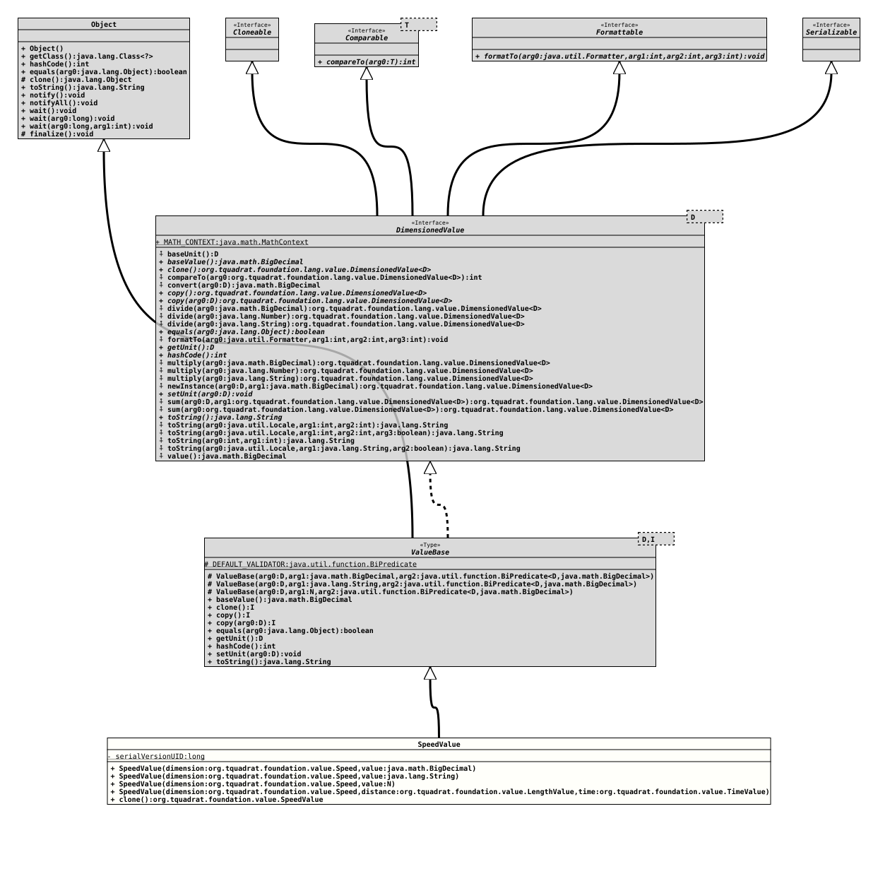

Class SpeedValue
java.lang.Object
org.tquadrat.foundation.value.api.ValueBase<Speed, SpeedValue>
org.tquadrat.foundation.value.SpeedValue
- All Implemented Interfaces:
Serializable, Cloneable, Comparable<DimensionedValue<Speed>>, Formattable, DimensionedValue<Speed>
@ClassVersion(sourceVersion="$Id: SpeedValue.java 1072 2023-09-30 20:44:38Z tquadrat $")
@API(status=STABLE,
since="0.1.0")
public final class SpeedValue
extends ValueBase<Speed, SpeedValue>
A value class for speeds.
- Author:
- Thomas Thrien (thomas.thrien@tquadrat.org)
- Version:
- $Id: SpeedValue.java 1072 2023-09-30 20:44:38Z tquadrat $
- Since:
- 0.1.0
- See Also:
- UML Diagram
-

UML Diagram for "org.tquadrat.foundation.value.SpeedValue"
{kind=link}
-
Field Summary
Fields inherited from class ValueBase
DEFAULT_VALIDATORFields inherited from interface DimensionedValue
MATH_CONTEXT -
Constructor Summary
ConstructorsModifierConstructorDescriptionSpeedValue(Speed dimension, String value) Creates a newSpeedValueinstance.SpeedValue(Speed dimension, BigDecimal value) Creates a newSpeedValueinstance.<N extends Number>SpeedValue(Speed dimension, N value) Creates a newSpeedValueinstance.SpeedValue(Speed dimension, LengthValue distance, TimeValue time) Creates a newSpeedValueinstance. -
Method Summary
-
Constructor Details
-
SpeedValue
Creates a newSpeedValueinstance.- Parameters:
dimension- The dimension.value- The value.
-
SpeedValue
Creates a newSpeedValueinstance.- Parameters:
dimension- The dimension.value- The value; it must be possible to parse the given String into aBigDecimal.- Throws:
NumberFormatException- The provided value cannot be converted into aBigDecimal.
-
SpeedValue
Creates a newSpeedValueinstance.- Type Parameters:
N- The type ofvalue.- Parameters:
dimension- The dimension.value- The value.
-
SpeedValue
Creates a newSpeedValueinstance.- Parameters:
dimension- The dimension.distance- The travelled distance.time- The time for travelling the given distance.
-
-
Method Details
-
clone
Creates a new copy of this value.- Specified by:
clonein interfaceDimensionedValue<Speed>- Overrides:
clonein classValueBase<Speed, SpeedValue>- Returns:
- The copy.
-